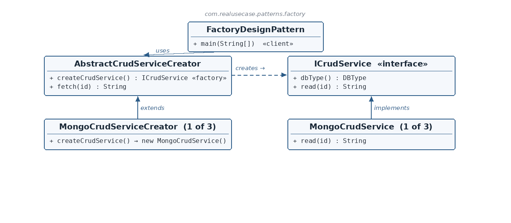

ICrudService.java — the product interface
☕ 5 min read · 🎬 Video walkthrough · 📊 UML diagram · 💻 Runnable code
⚡ In a nutshell — Define an interface for creating an object, but let subclasses decide which concrete class to instantiate.
Define an interface for creating an object, but let subclasses decide which concrete class to instantiate. The creator's own algorithm works against an abstract product; a single factory method is the one point each subclass overrides to supply its own product.
The client picks a creator, never a product directly. This keeps the code that uses a product completely decoupled from the code that constructs it — new product types can be added without touching a single existing line.
In real backend services, the same business operation — say, "read a record by id" — must run against different storage engines: MongoDB, PostgreSQL, Neo4j. Each engine needs its own client object and its own read logic, but the calling code should not care which engine is behind it. This module models exactly that: an abstract AbstractCrudServiceCreator whose fetch(id) algorithm is written once, and one concrete creator per database that supplies the matching ICrudService. Adding a fourth engine (say Redis) means adding two small classes and editing nothing else.
ICrudService is the product interface — every storage-specific service implements it (read(id), dbType()).AbstractCrudServiceCreator is the abstract creator. It declares an abstract createCrudService() — the factory method — and a concrete fetch(id) method that is the real algorithm: it calls the factory method, then uses the returned product.MongoCrudServiceCreator, PostgresCrudServiceCreator, Neo4jCrudServiceCreator) overrides only createCrudService() to return its own product.fetch(id) on each, and never names a concrete product.The key insight: the abstract creator is not just a maker of products — it is a user of the product it makes. That is what separates Factory Method from a plain object factory.

Reading the diagram: FactoryDesignPattern (the client) only ever touches AbstractCrudServiceCreator and, through it, the ICrudService interface — never a concrete MongoCrudService. Each concrete creator extends the abstract creator and overrides the single factory method; each concrete product implements ICrudService. Only three of the products/creators are shown; Postgres and Neo4j follow the identical shape.
ICrudService — Product interface — read(id) and dbType(), implemented by every storage service.MongoCrudService / PostgresCrudService / Neo4jCrudService — Concrete products — one per storage engine, each with its own read behavior.AbstractCrudServiceCreator — Abstract creator — declares the factory method createCrudService() and owns the fetch(id) template algorithm.MongoCrudServiceCreator / … — Concrete creators — each overrides createCrudService() to build its matching product.FactoryDesignPattern — Client — chooses creators and calls fetch, staying decoupled from concrete products.public interface ICrudService {
DBType dbType();
String read(String id);
}
dbType() lets each product declare its own identity (MONGO, POSTGRES, NEO4J) — the product carries its own key, so nothing outside needs a lookup table.read(String id) is the behavior every product offers; it is what the creator's fetch ultimately calls.MongoCrudService.java — one concrete productpublic class MongoCrudService implements ICrudService {
@Override public DBType dbType() { return DBType.MONGO; }
@Override public String read(String id) { return "mongo document " + id; }
}
Postgres and Neo4j are identical except for the string they return.AbstractCrudServiceCreator.java — the abstract creatorpublic abstract class AbstractCrudServiceCreator {
public abstract ICrudService createCrudService();
public String fetch(String id) {
ICrudService crudService = createCrudService();
return crudService.read(id);
}
}
createCrudService() is the factory method — the one deferred decision. It returns the abstract ICrudService, so nothing in this class ever names a concrete product.fetch(id) is the real algorithm the pattern exists to share: create a product, then use it (read). Written once here, inherited by every creator. If fetch grew (validate → create → read → log), all creators would gain those steps for free.MongoCrudServiceCreator.java — one concrete creatorpublic class MongoCrudServiceCreator extends AbstractCrudServiceCreator {
@Override public ICrudService createCrudService() {
return new MongoCrudService();
}
}
new MongoCrudService(). This is the only place in the module a concrete product is constructed. The other two creators differ only in which product they new.FactoryDesignPattern.java — the clientList<AbstractCrudServiceCreator> creators = List.of(
new MongoCrudServiceCreator(), new PostgresCrudServiceCreator(), new Neo4jCrudServiceCreator());
creators.forEach(creator -> System.out.println(creator.fetch("42")));
fetch("42") on each. Each creator internally builds its own product and reads through it. The client never sees MongoCrudService — only the abstraction.switch? Because the variation point is the creation itself, and Factory Method puts that variation in the type system. Adding a RedisCrudService = add the product + a RedisCrudServiceCreator; no existing file changes — Open/Closed by construction.fetch() live in the abstract creator? That is the point: the creator is a user of its own product. fetch is code written once against ICrudService that works for every current and future subclass.ICrudService, not the concrete type? So the inherited fetch and any caller stay coupled only to the abstraction. The concrete class name appears exactly once, inside its creator.$ java -cp target/classes com.realusecase.patterns.FactoryDesignPattern
mongo document 42
postgres row 42
neo4j node 42
java.util.Calendar.getInstance() and NumberFormat.getInstance() — the JDK's own factory methods.Pick the factory, and it makes — and uses — its one product. That is Factory Method.
👏 Found this useful? Give it a few claps so more developers discover it, and follow for the whole series — every article ships with a UML diagram, runnable code, a narrated video, and a companion PDF. Happy building! 🚀